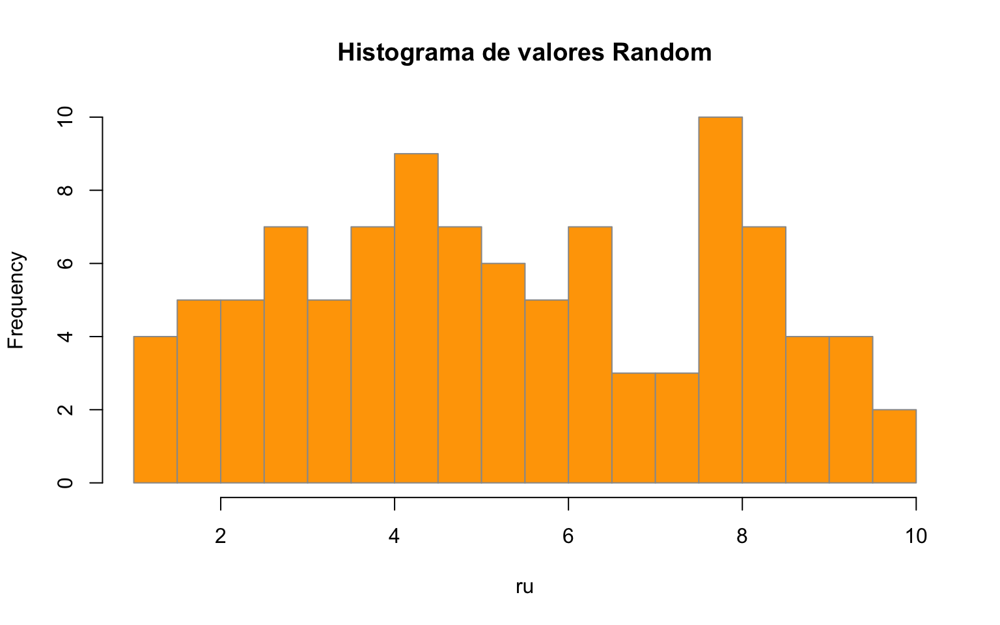

# La asignación en R son válidos 2 métodos '<-' o '='
x <- 7 # Definir variable (escalar) x que sea igual a 7
x # Mostrar que es x[1] 7y <- 3 + 2 * x # Crear y como funcion de x
y[1] 17class(y)[1] "numeric"Los Datos en R se pueden clasificar por su dimensiones y los tipos de Datos que permiten almacenar, como se muestra en la siguiente tabla:
| Dimensiones | Homogéneos | Heterogéneos |
|---|---|---|
| 1d | Atomic vector | List |
| 2d | Matrix | Data frame |
| nd | Array |
Fuente: http://adv-r.had.co.nz/Data-structures.html
R nos permite definir variables que pueden ser luego usadas en las distintas operaciones. El lenguaje no solo permite definir escalares (variable de un numero), si no también variables que sean un conjunto de numero o caracteres ordenados.
# La asignación en R son válidos 2 métodos '<-' o '='
x <- 7 # Definir variable (escalar) x que sea igual a 7
x # Mostrar que es x[1] 7y <- 3 + 2 * x # Crear y como funcion de x
y[1] 17class(y)[1] "numeric"Números Random con decimales
ru <- runif(n = 100, min = 1, max = 10)
ru [1] 5.930788 3.956131 3.342021 8.697688 9.944607 2.994681 8.525285 5.047273
[9] 2.850082 9.774288 5.226254 3.780178 5.223975 5.208808 1.878857 7.971354
[17] 6.128305 8.561189 1.243277 3.978106 7.700536 4.839797 9.439901 4.071227
[25] 1.988674 4.730944 3.084477 9.362690 1.157382 7.293323 1.729778 3.423252
[33] 9.463366 4.647926 5.398147 7.740617 9.775634 6.411100 1.475157 5.839752
[41] 7.729371 2.686535 7.247792 4.461482 1.613324 9.616716 6.746802 6.804118
[49] 4.834852 3.362311 6.682948 4.445659 4.538496 8.205258 3.564600 9.279856
[57] 2.065776 5.121146 1.678057 4.998802 8.961468 5.339518 9.883989 6.581984
[65] 7.924488 1.872681 3.681108 3.580355 3.794134 9.793604 3.835547 6.493651
[73] 9.802915 2.561087 7.903989 6.319108 5.478905 3.295461 7.752855 6.892406
[81] 4.595018 6.246136 9.303504 3.098247 9.998047 2.188718 8.328250 5.993208
[89] 4.742395 5.028677 1.810516 5.621878 9.772403 3.515527 9.999783 8.260599
[97] 5.386895 6.820558 4.539352 3.451335hist(ru, breaks = 20, col = "orange", border = "gray60",
main = "Histograma de valores Random")
Números Random Enteros
Simular los lanzamientos de un dado
sample.int(n = 6, size = 10, replace = T) [1] 4 5 2 2 5 3 4 3 3 4ch <- "Chile" # Definir variable (objeto) ch que sea la palabra "Chile"
sn <- "Santiago"
ch # Mostrar ch[1] "Chile"sn[1] "Santiago"Unir variables de texto con paste()
ch <- "Chile" # Definir variable (objeto) ch que sea la palabra "Chile"
sn <- "Santiago"
union <- paste(sn,ch, sep = ", ")
union[1] "Santiago, Chile"Utilizar paste0()
union <- paste("Provincia de ", sn,ch, sep = ", ")
union[1] "Provincia de , Santiago, Chile"union0 <- paste0("Provincia de ", sn, ", ", ch)
union0[1] "Provincia de Santiago, Chile"Buscar y reemplazar con gsub
av <- "Av. Apoquindo"
comuna <- "comuna de Las Condes"
calle <- paste(av, comuna, union0, sep = ", ")
calle[1] "Av. Apoquindo, comuna de Las Condes, Provincia de Santiago, Chile"# reemplazar Av. por Avenida
calle_new <- gsub(pattern = "Av.", replacement = "Avenida", x = calle)
calle_new[1] "Avenida Apoquindo, comuna de Las Condes, Provincia de Santiago, Chile"Las variables pueden ser un conjunto de números y caracteres ordenados de varias maneras. El orden que se les da depende de lo que queremos lograr con estos.
Vector Cadenas unidimensionales (es decir una sola columna o fila) de un tipo único de valores (numéricos, caracteres, etc.)
vec <- c(4, 3, 1, 5, 8, 16)
vec[1] 4 3 1 5 8 16class(vec)[1] "numeric"str(vec) num [1:6] 4 3 1 5 8 16Podemos seleccionar parte del vector:
# EL primer índice en R es 1 (en otros lenguajes de programación es 0)
vec[3][1] 1La selección también puede ser hecha con una condición, de tal manera que solo seleccione aquella parte del vector que cumple con la condición.
Mayor a:
vec[vec >= 4][1] 4 5 8 16Contenido en:
vec[vec %in% c(3, 8, 7, 29)][1] 3 8Negación de la condición:
vec[!vec <= 3][1] 4 5 8 16También podemos realizar operaciones matemáticas simples aplicadas al vector, por ejemplo una suma:
vec2 <- c(7, 10, 1)
vec + vec2[1] 11 13 2 12 18 17Son estructuras eficientes y flexibles, que permiten combinar distintas clases de elementos :
lista <- list(1, 2, 3, "cosa", x, y)
lista[[1]]
[1] 1
[[2]]
[1] 2
[[3]]
[1] 3
[[4]]
[1] "cosa"
[[5]]
[1] 7
[[6]]
[1] 17str(lista)List of 6
$ : num 1
$ : num 2
$ : num 3
$ : chr "cosa"
$ : num 7
$ : num 17#Tambien se puede seleccionar parte de una lista, usando el doble corchete:
lista[[3]][1] 3Son estructuras de datos con 2 dimensiones, horizontal y la vertical (filas y columnas). Podemos construirlas usando la función “matrix”, con un vector inicial y sus dimensiones:
n <- matrix(c(1.3, 2.8, 3.5, 6.4, 5.3, 6.2, 7, 4.5, 2.4, 6.3, 5.6, 5.3, 6.6, 7, 4.3),
nrow = 5, ncol = 3, byrow = TRUE)
n [,1] [,2] [,3]
[1,] 1.3 2.8 3.5
[2,] 6.4 5.3 6.2
[3,] 7.0 4.5 2.4
[4,] 6.3 5.6 5.3
[5,] 6.6 7.0 4.3La matriz tiene 2 dimensiones, por lo que para seleccionar partes de ella es necesario declarar dos dimensiones separadas por una coma. A la izquierda van las filas y a la derecha las columnas. Un valor vacío indica que se seleccionan todos los valores posibles.
n[1,2][1] 2.8n[,3][1] 3.5 6.2 2.4 5.3 4.3Estructura mas clásica de datos, es una matriz pero con mas atributos como nombres de columna y/o fila. Es lo mas similar en R a una tabla excel o la tabla de atributos. La manera mas simple de crear un dataframe es a partir de una matriz usando la función as.data.frame() :
df<- as.data.frame(n)
df V1 V2 V3
1 1.3 2.8 3.5
2 6.4 5.3 6.2
3 7.0 4.5 2.4
4 6.3 5.6 5.3
5 6.6 7.0 4.3Podemos asignar nombres a las columnas del dataframe
names(df)<- c("control_1","control_2","examen")
df control_1 control_2 examen
1 1.3 2.8 3.5
2 6.4 5.3 6.2
3 7.0 4.5 2.4
4 6.3 5.6 5.3
5 6.6 7.0 4.3Y a las filas del dataframe
df$alumno <- c("Sofia","Tomas","Luciano","Julian","Gabriela")
df control_1 control_2 examen alumno
1 1.3 2.8 3.5 Sofia
2 6.4 5.3 6.2 Tomas
3 7.0 4.5 2.4 Luciano
4 6.3 5.6 5.3 Julian
5 6.6 7.0 4.3 GabrielaTambién podemos realizar operaciones entre vectores del dataframe:
df$promedio_final <- 0.3*df$control_1 + 0.3*df$control_2 + 0.4*df$examen
df control_1 control_2 examen alumno promedio_final
1 1.3 2.8 3.5 Sofia 2.63
2 6.4 5.3 6.2 Tomas 5.99
3 7.0 4.5 2.4 Luciano 4.41
4 6.3 5.6 5.3 Julian 5.69
5 6.6 7.0 4.3 Gabriela 5.80